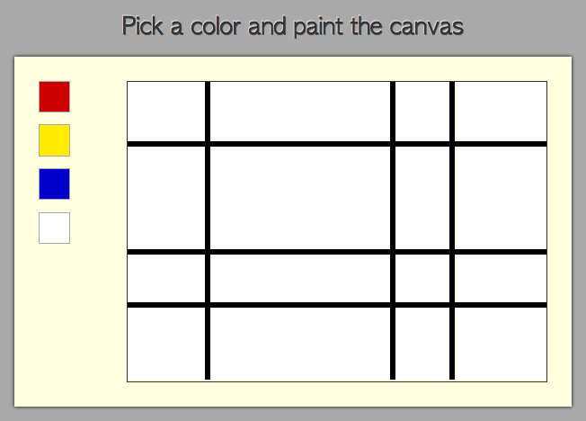

So you want to be a coder? Perhaps you know a little HTML and CSS, maybe a little Javascript? Perhaps you would like to learn a little backend as well? Perhaps you don't know any of the above and simply want to learn. Well this is the place for you to do that, and follow along.
For this tutorial I will start out in Javascript, I recommend using Chrome and it's developer tools to debug Javascript. Later on we will do a little basic server action in Ruby with the Sinatra framework. These links are not necessary, but provide an exterior resource towards a deeper understanding:
On to the Coding! It's nice to start with some code already written (and functioning) isn't it? Follow this link and copy the files and file structure into your working directory: Here Open the html file via your favorite command line and have a look. You should see this:

Our very first step will be to make a Javascript file, e.g. "scripts.js" in the same directory as our html file. Make sure to include this in our HTML by typing this in the header along with the stylesheet:
Our first portion of this tutorial will be creating some front end functionality via Javascript. The JS file is empty and we will fill it with the elements we need so that when we click on a color, and then click a square, the corresponding color will fill the square.
Often in programming it helps to break larger problems into smaller ones. Let's first try to change the color of just one element. Well Javascript is great at this. Looking at the HTML we can see our first row of Mondrian Squares:
We want to target these elements, but there is a catch: to target any elements in the window, we first need to make sure the window loads. So we first load the window, then we collect our elements of the first row:
window.addEventListener("load", function(){ //waits for window to load
var rowOne = document.getElementsByClassName("row_1");
});
To change the color, lets set a variable:
currentColor = "red";
Last but not least we need to "listen" for an event (namely, a click), when it happens on our Mondrian. But right now let's just focus on one piece, the top left square.
In our collection rowOne, we know the first element of it will be rowOne[0]. So to listen for the user to click on this square we use event listener again, and it looks like this:
rowOne[0].addEventListener("click",function(){
this.style.background = currentColor;
So this literally reads: "Hey Javascript. Listen for a click on our first square of our Mondrian. Then when we click, perform this function."
This style of function in Javascript is known as an "anonymous function", because we never give it a name. The function is passed as a parameter of the "addEventListener" call, and the anonymous function takes no paramaters, because it automatically is accepting the event(in our case: the click on the Mondrian square).
Make sure you verify that it works. Remember that currentColor is currently hard coded as red. You can change this to anything you want. But if you are following true Mondrian style, you will only use primary colors.
So the next step to change the color of all our "square" nodes will be to add event listeners on all of them. To do this we should collect them using document.get.. And while we are at it, why don't we document.get our color palette nodes as well:
var colors = document.getElementsByClassName("color");
var allRows = document.getElementsByClassName("row");
What better way to add an event listener to allRows , than to use a foor loop! It should look something like this:
//add event listener to all squares within Mondrian
What better time to verify this is working! our
for (var i = 0; i < allRows.length; i++) {
allRows[i].addEventListener("click",function(){
this.style.background = currentColor;
});
}
currentColor should still be red. Clickety clickety click! Make sure it works before you go any further!
We still want a click to trigger the color stored in our currentColor variable. But wouldn't it be nice if we could change the current color based on the most recently clicked color on our color palette? Sounds like the job for another set of event listeners!
//add event listeners to all color buttons, calls setColor
We used a bit of wishful thinking here. Sometimes wishful thinking can go a long way when we program. We want a function that will set the color when we click on our different color buttons. But this is easy, right? We have at least two ways we could get this in Javascript. One is to take a node from our variable collection
for (var i = 0; i < colors.length; i++) {
colors[i].addEventListener("click",setColor);
}
colors and check event.style.backgroundColor. This should work. Another way to do this is to realize in our HTML that each color on our palette has a unique ID with the strings:
Alternatively, we could simply access the color of an element that we click on by using event.target.id ! Remember that event, or commonly seen as simply e is a way to reference the current "thing" we just listened to. When we called this eventListener, and dreamt of our function setColor, it will only accept one thing by definition, which is the event of clicking. This event contains a useful piece of information which is what we clicked on. In Javascript it is event.target. So our setColor function will look like this:
function setColor(e){
currentColor = e.target.id;
}
Now we have set up event listeners for all the color buttons, and when we click any color button, it stores our variable currentColor as the most recently clicked color. At this point we expect everything to work ,so make sure you verify it works! Click click, clickety click!
Painting has never been so easy! Well ok maybe this isn't as easy as actually painting, but it certainly shows the power of Javascript in combination with established HTML and CSS.